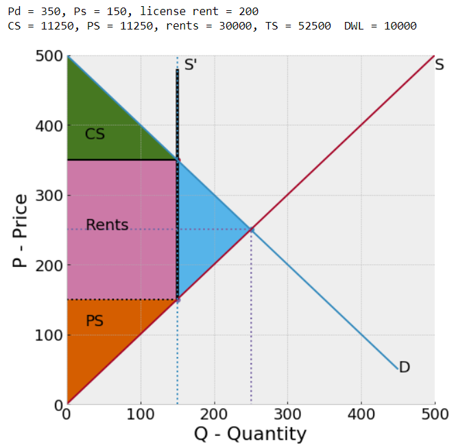

Teaching Economics Notebooks¶
A collection of interactive Geogebra applets and python Jupyter Notebooks for teaching Economics, that I’ve used at Hunter College, The Graduate Center, and elsewhere. Created by Jonathan Conning.
The geogebra applets are immediately interactive. The jupyter notebooks are static renderings unless you run the notebooks on a jupyter server on your own machine or in the cloud via the launch-binder button below which will (after a minute or so) create a virtual machine:

{kind=link}

If you want to point out any errors or make suggestions or improvements, create an issue at the github repository hosting this content:
This content varies in quality from more polished to crude. I’ve organized them loosely into notebooks sub-folders
intro – Intro Microeconomics (Eco 100 and Eco 200)
Trade – Trade models (Eco 340 and Eco 740)
micro – Eco 701 Micro Theory models
Elsewhere I have created notebooks for other courses:
PhD Development seminar – PhD development seminar at The Graduate Center
Land property rights – for a short course on political economy of land in Cape Town 2019
A sample geogebra interactive: